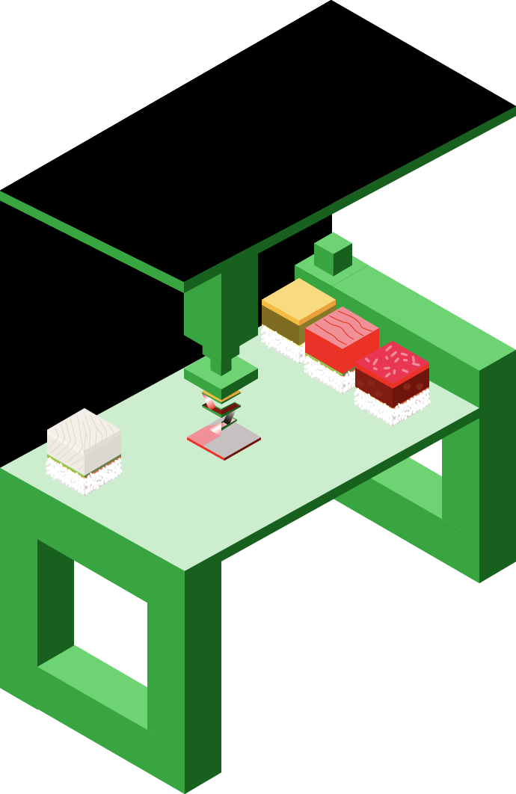

Teleportation Machine
Every household has at least one Teleportation Machine, it prints not only food, also other objects.
Food will be delivered in the form of particles in no time with teleportation machines. (Although not fully understand quantum entanglement, people use it to transfer objects in particle form)
- Date: January 2047
- Client: Foodget
- Category: early model